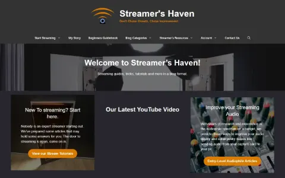
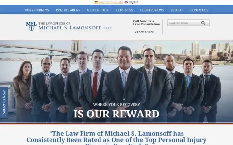
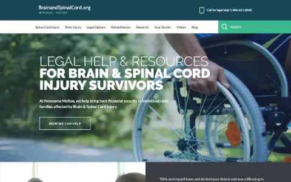
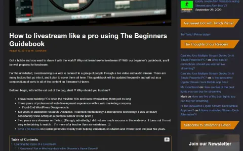

A Build Log, Not a Highlight Reel.
Four kinds of work, one habit: ship it, then measure it. Web builds, SEO content, sales, and marketing operations, including the project that ended a company.
Web Development
Custom WordPress and Shopify builds, from a two-person agency in 2015 to a hotel site proposed and built from behind the front desk.
-
2025–2026

Homepage
The Northeastland Hotel
Website redesign and copywriting · WordPressHired as front desk staff, I proposed and built a full redesign of the hotel's website from the ground up, with copy written to fit the company's mission and vision: 24 page templates and 6 conversion-focused landing pages with integrated booking, on a WordPress multisite install hosted on Cloudways.
-
2025–2026

Homepage
IgnitePI
Companion build to the hotel site · WordPressBuilt alongside the hotel rebuild while I was on staff there. IgnitePI is the nonprofit that owns The Northeastland, and it needed a web presence of its own, so I built one on the same theme family as the hotel site. The difference in audience meant specific attention to the documentation and public-accessibility standards a nonprofit is held to, rather than the conversion-first structure of a hospitality site.
-
2026
LD Maker Co.
Shopify storefront · Co-founder (currently on hold)A storefront for a 3D-printing business I co-founded with a friend: theme setup, product listings, and storefront design end to end. Used AI-assisted tools (Claude Cowork, Claude Code) to move faster through the build, then reviewed and adjusted everything by hand before it shipped. The business is on hold for now.
-
2019–2021

Homepage (archived, Dec 2020)
Streamershaven — Custom Theme
Theme, brand, and logo design · WordPressStreamer's Haven was a tutorial site for live streamers that I launched in April 2019 and ran solo until I sold it. This entry is the build: I designed the brand, coded the custom WordPress theme, and built every template the site ran on.
-
2016–2017

Homepage (archived, Sep 2017)
The Law Offices of Michael S. Lamonsoff
Site redesign · WordPress / Divi · Ardea StudiosA redesign for a Manhattan personal-injury firm, built at Ardea in late 2016 and launched in 2017. The homepage does the persuading in order: the team photo, a $300 million results band, award badges, media appearances, the attorney roster, client video testimonials, and a practice-area grid, all above the long-form SEO copy.
-
2016

After: the WordPress/Divi build (archived, Nov 2016)
The 2,700-Page Migration
BrainandSpinalCord.org · Drupal to WordPress, by hand · Ardea StudiosA full Drupal-to-WordPress migration for BrainandSpinalCord.org, a legal-resource site for injury survivors, moved into a new Divi build that reproduced the existing design one-for-one. The job was the content: 2,700+ pages and 3,400+ blog posts, imported individually rather than scripted, since the source structure didn't allow for a clean automated pass. About 800 hours of work, done over scope and over budget. We finished it. It's also the project that ended the company, since the time it took cost us the rest of our client list.
-
2015–2016
Ardea Studios
Co-founderA two-person web development shop I started with my business partner Luna, right as the industry made its hard pivot to mobile-first design. Served around 30 small-business clients with responsive WordPress builds. This is where I actually learned the craft.
SEO & Content
Research it, write it, optimize it, measure it. Classic and AI-assisted SEO tooling, with the HTML and schema knowledge to fix what the tools flag.
-
2019–2021

The Beginners Guidebook: the hub article for first-time streamers
Streamershaven
Founder & publisher · content and SEOStreamer's Haven was a how-to site for live streamers, and for three years I was its entire editorial staff: 246 articles, every one researched, written, edited, illustrated, and optimized by me, writing under the pen name Mr. Goodhand.
-
2025–2026
The Northeastland Hotel — Content & Schema
Copy, structured data, and image performance across two sitesThe content side of the hotel build. Wrote and published event landing page copy and pre-arrival email content with consistent on-page SEO structure and metadata, added FAQ schema markup so answer engines could pull from the site directly, and optimized every image across the hotel and IgnitePI sites (WebP where possible, under 100KB) to protect page speed.
Sales
High-volume closing and consultative upselling, in English and conversational Spanish, with the numbers to show for it.
-
2024–2025
Washville Car Wash
Sales Associate · unlimited wash membershipsClosed at a 23.1% conversion rate on unlimited wash memberships, with peak days over 50%, which put me third in the company overall for sales. Sold 49 memberships on opening day during a free-wash promotion. Raised average transaction value by consistently upselling customers from the $10 base wash into $16–$25 packages, selling features as benefits. Picked up enough Spanish on the job to pitch and close Spanish-speaking customers in it.
-
2025–2026
The Northeastland Hotel — Front Desk & Revenue Ops
Rate plans, bookings, and guest retentionCreated and managed rate plans supporting the hotel's pricing strategy, partnered with management on promotional campaigns, and built email automation for guest retention. On the desk, handled daily bookings and inquiries, converting questions into reservations and upsells. Independently enabled and built out Cloudbeds' digital check-in system and guest portal, wrote about eight standard operating procedures for the desk and the site, and built conversion-focused landing pages with integrated booking.
-
2024
Pet Supplies Plus
Team Member · retail floorConsistently exceeded sales goals, including 30+ shelter donations per shift and a store record of 70+ in one shift, and earned the highest volume of positive customer surveys among all employees.
-
2021
Streamershaven — Site Sale
Founder · built the asset, then sold itThe one sale where the product was something I'd built myself. After three years of growing Streamershaven to 40,000+ monthly organic visitors, I packaged the site, its traffic history, its ad and affiliate revenue, and its content library for a buyer, negotiated the deal, and handed it off to its new owner in 2021. Different from closing at a counter, but the same job underneath: know what it's worth, show the proof, and get to yes.
Marketing & Operations
Local marketing that gets watched, systems work that gets done, and a content site turned into a revenue stream.
-
2026
Alpha Pressure Washing
Operations & Marketing CoordinatorProduced Facebook Reels that pulled in thousands of views for a local pressure-washing company, alongside before/after photo content for Nextdoor, Yelp, and Facebook.
-
2019–2021
Streamershaven — Monetization
Affiliate marketing and display ads · Google AdSense to EzoicTurning Streamershaven's traffic into revenue. Gear guides and setup tutorials carried affiliate links, placed where they answered a real buying question rather than bolted on. Display ads started on Google AdSense; once the site cleared Ezoic's traffic minimum, I moved it over to their ad platform for better placement testing and higher revenue per visitor. Both streams were running when the site sold, which is what made it worth selling.
Also Worth Knowing
I spent about a year (2023–2024) doing contract QA for Systrix Software on AutomatePOD, a print-on-demand design automation tool: leading pre-release smoke testing, authoring test cases, and covering UX and automation testing on its Canva-integrated design feature. Not my build, but it's where a lot of my QA habits come from.